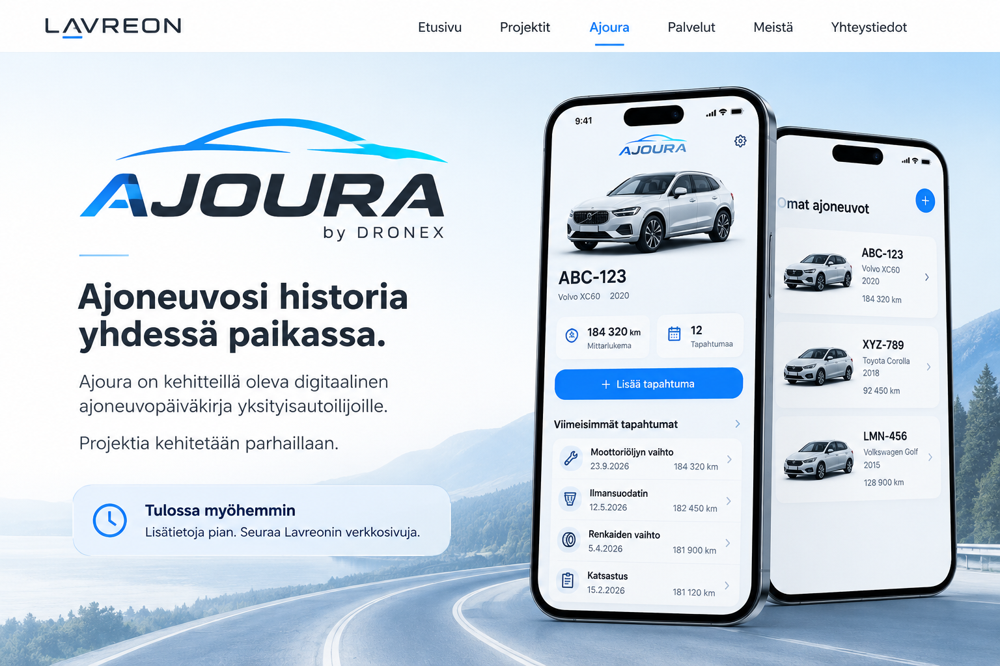

AJOURA by DRONEX
Ajoneuvosi historia yhdessä paikassa.
Ajoura on kehitteillä oleva digitaalinen ajoneuvopäiväkirja yksityisautoilijoille.
Projektia kehitetään parhaillaan.
Tulossa myöhemminLisätietoja pian. Seuraa Lavreonin verkkosivuja.

← Takaisin LavreoniinSovelluksen konseptikuva · Projekti kehitteillä